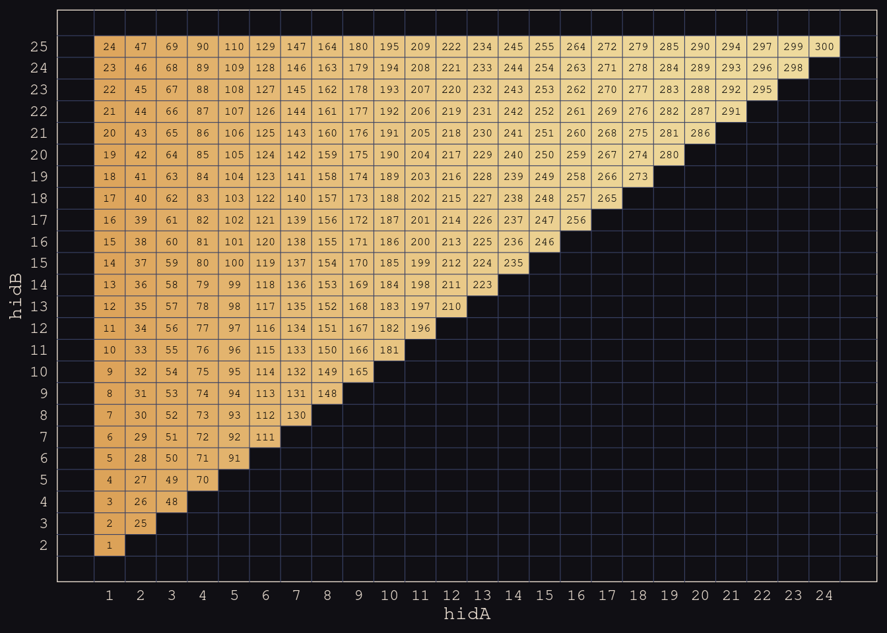
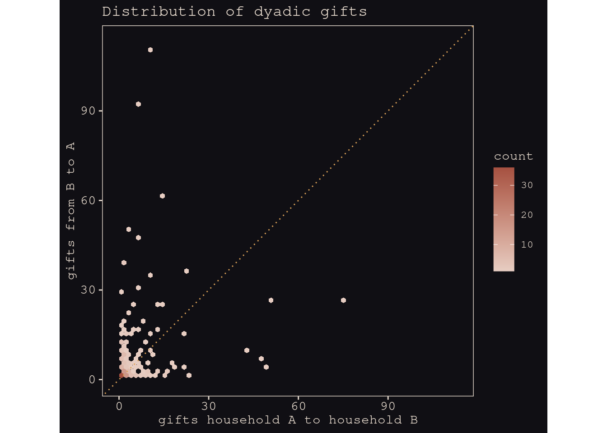
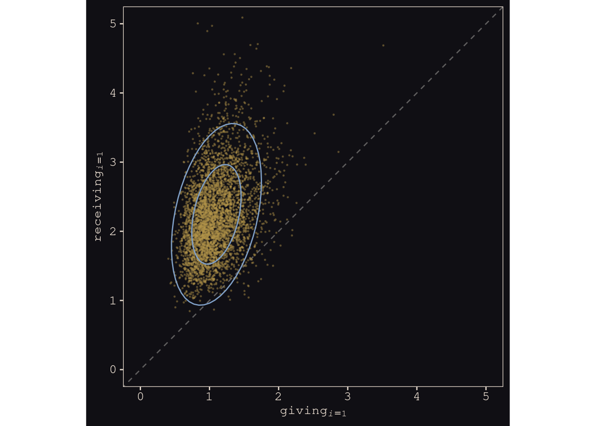
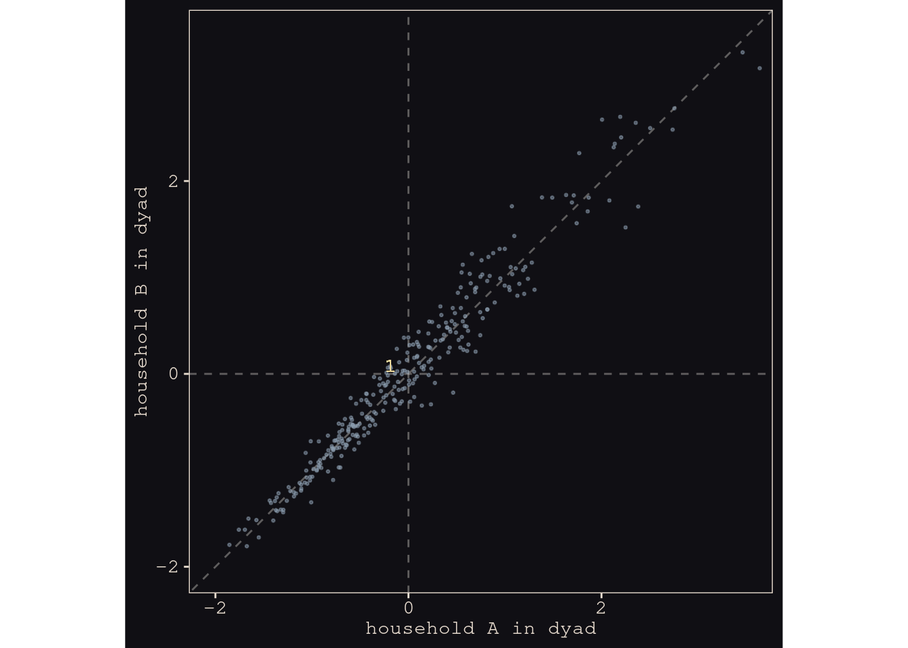
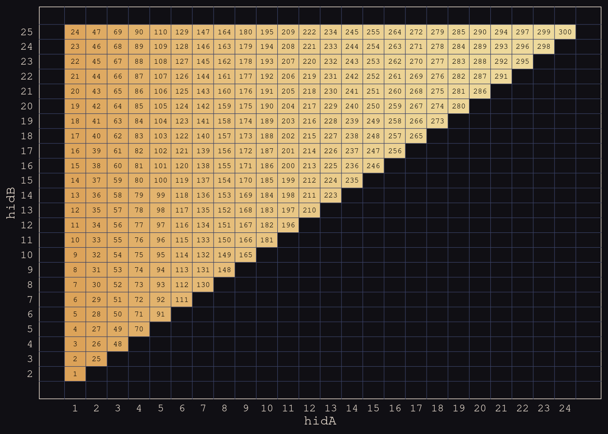
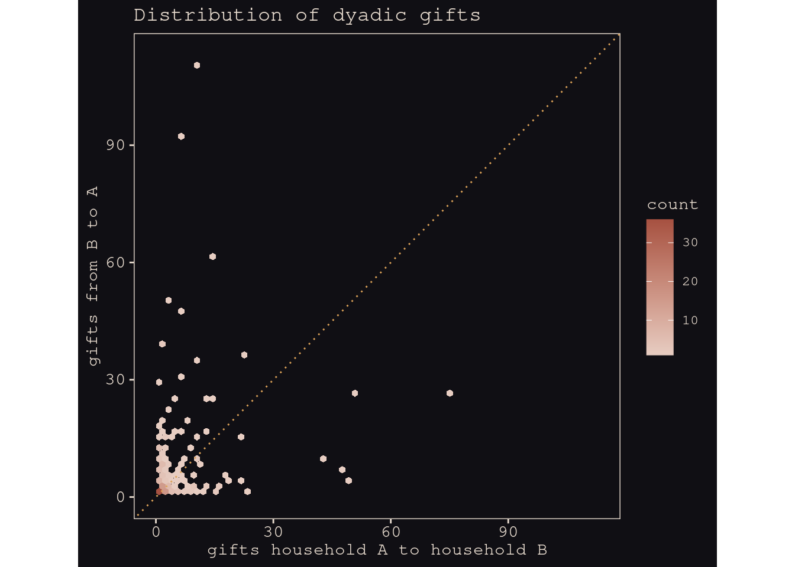
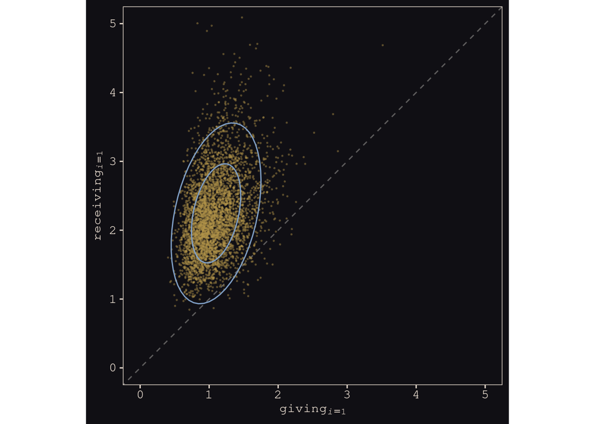
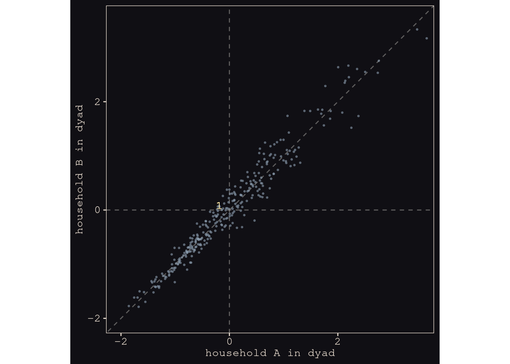

Social relations as correlated varying effects
library(rethinking)
data(KosterLeckie)
## Rows: 300
## Columns: 13
## $ hidA <int> 1, 1, 1, 1, 1, 1, 1, 1, 1, 1, 1, 1, 1, 1, 1, 1, 1, 1, 1, 1, 1,…
## $ hidB <int> 2, 3, 4, 5, 6, 7, 8, 9, 10, 11, 12, 13, 14, 15, 16, 17, 18, 19…
## $ did <int> 1, 2, 3, 4, 5, 6, 7, 8, 9, 10, 11, 12, 13, 14, 15, 16, 17, 18,…
## $ giftsAB <int> 0, 6, 2, 4, 8, 2, 1, 0, 10, 1, 0, 0, 1, 6, 0, 0, 0, 0, 0, 0, 0…
## $ giftsBA <int> 4, 31, 5, 2, 2, 1, 2, 1, 110, 0, 0, 6, 11, 0, 1, 4, 0, 2, 0, 7…
## $ offset <dbl> 0.000, -0.003, -0.019, 0.000, -0.003, 0.000, 0.000, 0.000, -0.…
## $ drel1 <int> 0, 0, 0, 0, 1, 0, 0, 0, 1, 0, 0, 0, 0, 0, 0, 0, 0, 0, 0, 0, 0,…
## $ drel2 <int> 0, 1, 1, 1, 0, 0, 0, 0, 0, 1, 0, 0, 1, 0, 0, 0, 0, 0, 0, 0, 0,…
## $ drel3 <int> 1, 0, 0, 0, 0, 0, 0, 0, 0, 0, 1, 1, 0, 0, 0, 0, 0, 0, 1, 0, 0,…
## $ drel4 <int> 0, 0, 0, 0, 0, 0, 1, 1, 0, 0, 0, 0, 0, 0, 0, 1, 0, 1, 0, 1, 1,…
## $ dlndist <dbl> -2.790, -2.817, -1.886, -1.892, -3.499, -1.853, -1.475, -1.644…
## $ dass <dbl> 0.000, 0.044, 0.025, 0.011, 0.022, 0.071, 0.046, 0.003, 0.552,…
## $ d0125 <int> 0, 0, 0, 0, 0, 0, 0, 0, 0, 0, 0, 0, 0, 0, 0, 0, 0, 0, 0, 0, 0,…
kl_dyads %>%
ggplot(aes(x = hidA, y = hidB, label = did)) +
geom_tile(aes(fill = did),
show.legend = F) +
geom_text(size = 2.25, family = "Courier") +
geom_vline(xintercept = 0:24 + 0.5, color = "#394165", size = 1/5) +
geom_hline(yintercept = 1:25 + 0.5, color = "#394165", size = 1/5) +
scale_fill_gradient(low = "#DCA258", high = "#EEDA9D", limits = c(1, NA)) +
scale_x_continuous(breaks = 1:24) +
scale_y_continuous(breaks = 2:25) +
theme(axis.text = element_text(size = 9),
axis.ticks = element_blank())

Figure 14.8
kl_dyads %>%
ggplot(aes(x = giftsAB, y = giftsBA)) +
geom_hex(bins = 70) +
geom_abline(color = "#DCA258", linetype = 3) +
scale_fill_gradient(low = "#E7CDC2", high = "#A65141", limits = c(1, NA)) +
scale_x_continuous("gifts household A to household B", limits = c(0, 113)) +
scale_y_continuous("gifts from B to A", limits = c(0, 113)) +
ggtitle("Distribution of dyadic gifts") +
coord_equal()
## Warning: Removed 11 rows containing missing values (geom_hex).

Pearson’s correlation coefficient, collapsing across grouping levels.
cor(kl_dyads$giftsAB, kl_dyads$giftsBA) %>% round(digits = 3)
## [1] 0.239
However, it would be a mistake to take this correlation seriously. It is a disentangled mixture of various kinds of associations, none of which are guaranteed to be even close to \(r=.24\). Remember this as we move along with the analyses and let the consequences burn a methodological mark into your soul.
kl_data <-
list(
N = nrow(kl_dyads),
N_households = max(kl_dyads$hidB),
did = kl_dyads$did,
hidA = kl_dyads$hidA,
hidB = kl_dyads$hidB,
giftsAB = kl_dyads$giftsAB,
giftsBA = kl_dyads$giftsBA
)
m14.7 <-
ulam(
alist(
giftsAB ~ poisson(lambdaAB),
giftsBA ~ poisson(lambdaBA),
log(lambdaAB) <- a + gr[hidA, 1] + gr[hidB, 2] + d[did, 1] ,
log(lambdaBA) <- a + gr[hidB, 1] + gr[hidA, 2] + d[did, 2] ,
a ~ normal(0, 1),
## gr matrix of varying effects
vector[2]:gr[N_households] ~ multi_normal(0, Rho_gr, sigma_gr),
Rho_gr ~ lkj_corr(4),
sigma_gr ~ exponential(1),
## dyad effects
transpars> matrix[N,2]:d <-
compose_noncentered(rep_vector(sigma_d, 2), L_Rho_d, z),
matrix[2,N]:z ~ normal(0, 1),
cholesky_factor_corr[2]:L_Rho_d ~ lkj_corr_cholesky(8),
sigma_d ~ exponential(1),
## compute correlation matrix for dyads
gq> matrix[2, 2]:Rho_d <<- Chol_to_Corr(L_Rho_d)
),
data = kl_data,
chains = 4, cores = 4, iter = 2000
)
## This is cmdstanr version 0.4.0
## - Online documentation and vignettes at mc-stan.org/cmdstanr
## - CmdStan path set to: /homes/brettell/.cmdstanr/cmdstan-2.28.2
## - Use set_cmdstan_path() to change the path
## Running MCMC with 4 parallel chains, with 1 thread(s) per chain...
##
## Chain 1 Iteration: 1 / 2000 [ 0%] (Warmup)
## Chain 1 Informational Message: The current Metropolis proposal is about to be rejected because of the following issue:
## Chain 1 Exception: lkj_corr_lpdf: Correlation matrix is not positive definite. (in '/tmp/RtmpezcR3b/model-2dd7716dc7e650.stan', line 30, column 4 to column 27)
## Chain 1 If this warning occurs sporadically, such as for highly constrained variable types like covariance matrices, then the sampler is fine,
## Chain 1 but if this warning occurs often then your model may be either severely ill-conditioned or misspecified.
## Chain 1
## Chain 1 Informational Message: The current Metropolis proposal is about to be rejected because of the following issue:
## Chain 1 Exception: lkj_corr_lpdf: Correlation matrix is not positive definite. (in '/tmp/RtmpezcR3b/model-2dd7716dc7e650.stan', line 30, column 4 to column 27)
## Chain 1 If this warning occurs sporadically, such as for highly constrained variable types like covariance matrices, then the sampler is fine,
## Chain 1 but if this warning occurs often then your model may be either severely ill-conditioned or misspecified.
## Chain 1
## Chain 1 Informational Message: The current Metropolis proposal is about to be rejected because of the following issue:
## Chain 1 Exception: lkj_corr_lpdf: Correlation matrix is not positive definite. (in '/tmp/RtmpezcR3b/model-2dd7716dc7e650.stan', line 30, column 4 to column 27)
## Chain 1 If this warning occurs sporadically, such as for highly constrained variable types like covariance matrices, then the sampler is fine,
## Chain 1 but if this warning occurs often then your model may be either severely ill-conditioned or misspecified.
## Chain 1
## Chain 1 Informational Message: The current Metropolis proposal is about to be rejected because of the following issue:
## Chain 1 Exception: lkj_corr_lpdf: Correlation matrix is not positive definite. (in '/tmp/RtmpezcR3b/model-2dd7716dc7e650.stan', line 30, column 4 to column 27)
## Chain 1 If this warning occurs sporadically, such as for highly constrained variable types like covariance matrices, then the sampler is fine,
## Chain 1 but if this warning occurs often then your model may be either severely ill-conditioned or misspecified.
## Chain 1
## Chain 1 Informational Message: The current Metropolis proposal is about to be rejected because of the following issue:
## Chain 1 Exception: lkj_corr_lpdf: Correlation matrix is not positive definite. (in '/tmp/RtmpezcR3b/model-2dd7716dc7e650.stan', line 30, column 4 to column 27)
## Chain 1 If this warning occurs sporadically, such as for highly constrained variable types like covariance matrices, then the sampler is fine,
## Chain 1 but if this warning occurs often then your model may be either severely ill-conditioned or misspecified.
## Chain 1
## Chain 2 Iteration: 1 / 2000 [ 0%] (Warmup)
## Chain 2 Informational Message: The current Metropolis proposal is about to be rejected because of the following issue:
## Chain 2 Exception: lkj_corr_lpdf: Correlation matrix is not positive definite. (in '/tmp/RtmpezcR3b/model-2dd7716dc7e650.stan', line 30, column 4 to column 27)
## Chain 2 If this warning occurs sporadically, such as for highly constrained variable types like covariance matrices, then the sampler is fine,
## Chain 2 but if this warning occurs often then your model may be either severely ill-conditioned or misspecified.
## Chain 2
## Chain 2 Informational Message: The current Metropolis proposal is about to be rejected because of the following issue:
## Chain 2 Exception: lkj_corr_lpdf: Correlation matrix is not positive definite. (in '/tmp/RtmpezcR3b/model-2dd7716dc7e650.stan', line 30, column 4 to column 27)
## Chain 2 If this warning occurs sporadically, such as for highly constrained variable types like covariance matrices, then the sampler is fine,
## Chain 2 but if this warning occurs often then your model may be either severely ill-conditioned or misspecified.
## Chain 2
## Chain 2 Informational Message: The current Metropolis proposal is about to be rejected because of the following issue:
## Chain 2 Exception: lkj_corr_lpdf: Correlation matrix is not positive definite. (in '/tmp/RtmpezcR3b/model-2dd7716dc7e650.stan', line 30, column 4 to column 27)
## Chain 2 If this warning occurs sporadically, such as for highly constrained variable types like covariance matrices, then the sampler is fine,
## Chain 2 but if this warning occurs often then your model may be either severely ill-conditioned or misspecified.
## Chain 2
## Chain 2 Informational Message: The current Metropolis proposal is about to be rejected because of the following issue:
## Chain 2 Exception: lkj_corr_lpdf: Correlation matrix is not positive definite. (in '/tmp/RtmpezcR3b/model-2dd7716dc7e650.stan', line 30, column 4 to column 27)
## Chain 2 If this warning occurs sporadically, such as for highly constrained variable types like covariance matrices, then the sampler is fine,
## Chain 2 but if this warning occurs often then your model may be either severely ill-conditioned or misspecified.
## Chain 2
## Chain 2 Informational Message: The current Metropolis proposal is about to be rejected because of the following issue:
## Chain 2 Exception: lkj_corr_lpdf: Correlation matrix is not positive definite. (in '/tmp/RtmpezcR3b/model-2dd7716dc7e650.stan', line 30, column 4 to column 27)
## Chain 2 If this warning occurs sporadically, such as for highly constrained variable types like covariance matrices, then the sampler is fine,
## Chain 2 but if this warning occurs often then your model may be either severely ill-conditioned or misspecified.
## Chain 2
## Chain 2 Informational Message: The current Metropolis proposal is about to be rejected because of the following issue:
## Chain 2 Exception: lkj_corr_lpdf: Correlation matrix is not positive definite. (in '/tmp/RtmpezcR3b/model-2dd7716dc7e650.stan', line 30, column 4 to column 27)
## Chain 2 If this warning occurs sporadically, such as for highly constrained variable types like covariance matrices, then the sampler is fine,
## Chain 2 but if this warning occurs often then your model may be either severely ill-conditioned or misspecified.
## Chain 2
## Chain 3 Iteration: 1 / 2000 [ 0%] (Warmup)
## Chain 3 Informational Message: The current Metropolis proposal is about to be rejected because of the following issue:
## Chain 3 Exception: lkj_corr_lpdf: Correlation matrix is not positive definite. (in '/tmp/RtmpezcR3b/model-2dd7716dc7e650.stan', line 30, column 4 to column 27)
## Chain 3 If this warning occurs sporadically, such as for highly constrained variable types like covariance matrices, then the sampler is fine,
## Chain 3 but if this warning occurs often then your model may be either severely ill-conditioned or misspecified.
## Chain 3
## Chain 3 Informational Message: The current Metropolis proposal is about to be rejected because of the following issue:
## Chain 3 Exception: lkj_corr_lpdf: Correlation matrix is not positive definite. (in '/tmp/RtmpezcR3b/model-2dd7716dc7e650.stan', line 30, column 4 to column 27)
## Chain 3 If this warning occurs sporadically, such as for highly constrained variable types like covariance matrices, then the sampler is fine,
## Chain 3 but if this warning occurs often then your model may be either severely ill-conditioned or misspecified.
## Chain 3
## Chain 3 Informational Message: The current Metropolis proposal is about to be rejected because of the following issue:
## Chain 3 Exception: lkj_corr_lpdf: Correlation matrix is not positive definite. (in '/tmp/RtmpezcR3b/model-2dd7716dc7e650.stan', line 30, column 4 to column 27)
## Chain 3 If this warning occurs sporadically, such as for highly constrained variable types like covariance matrices, then the sampler is fine,
## Chain 3 but if this warning occurs often then your model may be either severely ill-conditioned or misspecified.
## Chain 3
## Chain 3 Informational Message: The current Metropolis proposal is about to be rejected because of the following issue:
## Chain 3 Exception: lkj_corr_lpdf: Correlation matrix is not positive definite. (in '/tmp/RtmpezcR3b/model-2dd7716dc7e650.stan', line 30, column 4 to column 27)
## Chain 3 If this warning occurs sporadically, such as for highly constrained variable types like covariance matrices, then the sampler is fine,
## Chain 3 but if this warning occurs often then your model may be either severely ill-conditioned or misspecified.
## Chain 3
## Chain 4 Iteration: 1 / 2000 [ 0%] (Warmup)
## Chain 4 Informational Message: The current Metropolis proposal is about to be rejected because of the following issue:
## Chain 4 Exception: lkj_corr_lpdf: Correlation matrix is not positive definite. (in '/tmp/RtmpezcR3b/model-2dd7716dc7e650.stan', line 30, column 4 to column 27)
## Chain 4 If this warning occurs sporadically, such as for highly constrained variable types like covariance matrices, then the sampler is fine,
## Chain 4 but if this warning occurs often then your model may be either severely ill-conditioned or misspecified.
## Chain 4
## Chain 4 Informational Message: The current Metropolis proposal is about to be rejected because of the following issue:
## Chain 4 Exception: lkj_corr_lpdf: Correlation matrix is not positive definite. (in '/tmp/RtmpezcR3b/model-2dd7716dc7e650.stan', line 30, column 4 to column 27)
## Chain 4 If this warning occurs sporadically, such as for highly constrained variable types like covariance matrices, then the sampler is fine,
## Chain 4 but if this warning occurs often then your model may be either severely ill-conditioned or misspecified.
## Chain 4
## Chain 4 Informational Message: The current Metropolis proposal is about to be rejected because of the following issue:
## Chain 4 Exception: lkj_corr_lpdf: Correlation matrix is not positive definite. (in '/tmp/RtmpezcR3b/model-2dd7716dc7e650.stan', line 30, column 4 to column 27)
## Chain 4 If this warning occurs sporadically, such as for highly constrained variable types like covariance matrices, then the sampler is fine,
## Chain 4 but if this warning occurs often then your model may be either severely ill-conditioned or misspecified.
## Chain 4
## Chain 4 Informational Message: The current Metropolis proposal is about to be rejected because of the following issue:
## Chain 4 Exception: multi_normal_lpdf: Covariance matrix is not symmetric. Covariance matrix[1,2] = 4.70818e+22, but Covariance matrix[2,1] = 4.70818e+22 (in '/tmp/RtmpezcR3b/model-2dd7716dc7e650.stan', line 31, column 4 to column 77)
## Chain 4 If this warning occurs sporadically, such as for highly constrained variable types like covariance matrices, then the sampler is fine,
## Chain 4 but if this warning occurs often then your model may be either severely ill-conditioned or misspecified.
## Chain 4
## Chain 4 Informational Message: The current Metropolis proposal is about to be rejected because of the following issue:
## Chain 4 Exception: lkj_corr_lpdf: Correlation matrix is not positive definite. (in '/tmp/RtmpezcR3b/model-2dd7716dc7e650.stan', line 30, column 4 to column 27)
## Chain 4 If this warning occurs sporadically, such as for highly constrained variable types like covariance matrices, then the sampler is fine,
## Chain 4 but if this warning occurs often then your model may be either severely ill-conditioned or misspecified.
## Chain 4
## Chain 4 Informational Message: The current Metropolis proposal is about to be rejected because of the following issue:
## Chain 4 Exception: lkj_corr_lpdf: Correlation matrix is not positive definite. (in '/tmp/RtmpezcR3b/model-2dd7716dc7e650.stan', line 30, column 4 to column 27)
## Chain 4 If this warning occurs sporadically, such as for highly constrained variable types like covariance matrices, then the sampler is fine,
## Chain 4 but if this warning occurs often then your model may be either severely ill-conditioned or misspecified.
## Chain 4
## Chain 3 Iteration: 100 / 2000 [ 5%] (Warmup)
## Chain 1 Iteration: 100 / 2000 [ 5%] (Warmup)
## Chain 2 Iteration: 100 / 2000 [ 5%] (Warmup)
## Chain 1 Iteration: 200 / 2000 [ 10%] (Warmup)
## Chain 4 Iteration: 100 / 2000 [ 5%] (Warmup)
## Chain 3 Iteration: 200 / 2000 [ 10%] (Warmup)
## Chain 1 Iteration: 300 / 2000 [ 15%] (Warmup)
## Chain 3 Iteration: 300 / 2000 [ 15%] (Warmup)
## Chain 2 Iteration: 200 / 2000 [ 10%] (Warmup)
## Chain 1 Iteration: 400 / 2000 [ 20%] (Warmup)
## Chain 3 Iteration: 400 / 2000 [ 20%] (Warmup)
## Chain 4 Iteration: 200 / 2000 [ 10%] (Warmup)
## Chain 2 Iteration: 300 / 2000 [ 15%] (Warmup)
## Chain 1 Iteration: 500 / 2000 [ 25%] (Warmup)
## Chain 3 Iteration: 500 / 2000 [ 25%] (Warmup)
## Chain 2 Iteration: 400 / 2000 [ 20%] (Warmup)
## Chain 4 Iteration: 300 / 2000 [ 15%] (Warmup)
## Chain 1 Iteration: 600 / 2000 [ 30%] (Warmup)
## Chain 2 Iteration: 500 / 2000 [ 25%] (Warmup)
## Chain 3 Iteration: 600 / 2000 [ 30%] (Warmup)
## Chain 4 Iteration: 400 / 2000 [ 20%] (Warmup)
## Chain 1 Iteration: 700 / 2000 [ 35%] (Warmup)
## Chain 2 Iteration: 600 / 2000 [ 30%] (Warmup)
## Chain 3 Iteration: 700 / 2000 [ 35%] (Warmup)
## Chain 1 Iteration: 800 / 2000 [ 40%] (Warmup)
## Chain 4 Iteration: 500 / 2000 [ 25%] (Warmup)
## Chain 3 Iteration: 800 / 2000 [ 40%] (Warmup)
## Chain 1 Iteration: 900 / 2000 [ 45%] (Warmup)
## Chain 2 Iteration: 700 / 2000 [ 35%] (Warmup)
## Chain 4 Iteration: 600 / 2000 [ 30%] (Warmup)
## Chain 2 Iteration: 800 / 2000 [ 40%] (Warmup)
## Chain 3 Iteration: 900 / 2000 [ 45%] (Warmup)
## Chain 1 Iteration: 1000 / 2000 [ 50%] (Warmup)
## Chain 1 Iteration: 1001 / 2000 [ 50%] (Sampling)
## Chain 4 Iteration: 700 / 2000 [ 35%] (Warmup)
## Chain 2 Iteration: 900 / 2000 [ 45%] (Warmup)
## Chain 1 Iteration: 1100 / 2000 [ 55%] (Sampling)
## Chain 4 Iteration: 800 / 2000 [ 40%] (Warmup)
## Chain 3 Iteration: 1000 / 2000 [ 50%] (Warmup)
## Chain 3 Iteration: 1001 / 2000 [ 50%] (Sampling)
## Chain 1 Iteration: 1200 / 2000 [ 60%] (Sampling)
## Chain 4 Iteration: 900 / 2000 [ 45%] (Warmup)
## Chain 3 Iteration: 1100 / 2000 [ 55%] (Sampling)
## Chain 2 Iteration: 1000 / 2000 [ 50%] (Warmup)
## Chain 2 Iteration: 1001 / 2000 [ 50%] (Sampling)
## Chain 1 Iteration: 1300 / 2000 [ 65%] (Sampling)
## Chain 4 Iteration: 1000 / 2000 [ 50%] (Warmup)
## Chain 4 Iteration: 1001 / 2000 [ 50%] (Sampling)
## Chain 3 Iteration: 1200 / 2000 [ 60%] (Sampling)
## Chain 2 Iteration: 1100 / 2000 [ 55%] (Sampling)
## Chain 1 Iteration: 1400 / 2000 [ 70%] (Sampling)
## Chain 3 Iteration: 1300 / 2000 [ 65%] (Sampling)
## Chain 4 Iteration: 1100 / 2000 [ 55%] (Sampling)
## Chain 1 Iteration: 1500 / 2000 [ 75%] (Sampling)
## Chain 2 Iteration: 1200 / 2000 [ 60%] (Sampling)
## Chain 4 Iteration: 1200 / 2000 [ 60%] (Sampling)
## Chain 3 Iteration: 1400 / 2000 [ 70%] (Sampling)
## Chain 1 Iteration: 1600 / 2000 [ 80%] (Sampling)
## Chain 2 Iteration: 1300 / 2000 [ 65%] (Sampling)
## Chain 3 Iteration: 1500 / 2000 [ 75%] (Sampling)
## Chain 1 Iteration: 1700 / 2000 [ 85%] (Sampling)
## Chain 4 Iteration: 1300 / 2000 [ 65%] (Sampling)
## Chain 2 Iteration: 1400 / 2000 [ 70%] (Sampling)
## Chain 1 Iteration: 1800 / 2000 [ 90%] (Sampling)
## Chain 3 Iteration: 1600 / 2000 [ 80%] (Sampling)
## Chain 4 Iteration: 1400 / 2000 [ 70%] (Sampling)
## Chain 1 Iteration: 1900 / 2000 [ 95%] (Sampling)
## Chain 2 Iteration: 1500 / 2000 [ 75%] (Sampling)
## Chain 3 Iteration: 1700 / 2000 [ 85%] (Sampling)
## Chain 4 Iteration: 1500 / 2000 [ 75%] (Sampling)
## Chain 1 Iteration: 2000 / 2000 [100%] (Sampling)
## Chain 1 finished in 16.3 seconds.
## Chain 2 Iteration: 1600 / 2000 [ 80%] (Sampling)
## Chain 4 Iteration: 1600 / 2000 [ 80%] (Sampling)
## Chain 3 Iteration: 1800 / 2000 [ 90%] (Sampling)
## Chain 4 Iteration: 1700 / 2000 [ 85%] (Sampling)
## Chain 2 Iteration: 1700 / 2000 [ 85%] (Sampling)
## Chain 3 Iteration: 1900 / 2000 [ 95%] (Sampling)
## Chain 4 Iteration: 1800 / 2000 [ 90%] (Sampling)
## Chain 2 Iteration: 1800 / 2000 [ 90%] (Sampling)
## Chain 3 Iteration: 2000 / 2000 [100%] (Sampling)
## Chain 3 finished in 18.3 seconds.
## Chain 4 Iteration: 1900 / 2000 [ 95%] (Sampling)
## Chain 2 Iteration: 1900 / 2000 [ 95%] (Sampling)
## Chain 4 Iteration: 2000 / 2000 [100%] (Sampling)
## Chain 4 finished in 19.4 seconds.
## Chain 2 Iteration: 2000 / 2000 [100%] (Sampling)
## Chain 2 finished in 19.7 seconds.
##
## All 4 chains finished successfully.
## Mean chain execution time: 18.5 seconds.
## Total execution time: 19.9 seconds.
precis(m14.7, depth = 3, pars = c("Rho_gr", "sigma_gr"))
## mean sd 5.5% 94.5% n_eff Rhat4
## Rho_gr[1,1] 1.0000000 0.00000000 1.0000000 1.00000000 NaN NaN
## Rho_gr[1,2] -0.4137022 0.19504259 -0.6989984 -0.08187759 1346.884 0.9997828
## Rho_gr[2,1] -0.4137022 0.19504259 -0.6989984 -0.08187759 1346.884 0.9997828
## Rho_gr[2,2] 1.0000000 0.00000000 1.0000000 1.00000000 NaN NaN
## sigma_gr[1] 0.8280144 0.13839763 0.6319919 1.06595045 2201.960 1.0010170
## sigma_gr[2] 0.4206280 0.09125567 0.2869814 0.57225325 1038.857 1.0039446
post <- extract.samples(m14.7)
tibble(`sigma[italic(g)]` = post$sigma_gr[, 1],
`sigma[italic(r)]` = post$sigma_gr[, 2],
`rho[italic(g)][italic(r)]` = post$Rho_gr[, 2, 1]) %>%
pivot_longer(everything()) %>%
ggplot(aes(x = value, y = name, fill = name)) +
geom_vline(xintercept = 0, color = "#FCF9F0", alpha = 1/3) +
stat_halfeye(.width = .89, color = "#FCF9F0", height = 1.5) +
scale_fill_manual(values = c("#80A0C7", "#EEDA9D", "#DCA258")) +
scale_y_discrete(NULL, labels = ggplot2:::parse_safe) +
xlab("marginal posterior") +
coord_cartesian(ylim = c(1.5, 3.9)) +
theme(legend.position = "none")

Try plot(exp(g[,1]),exp(r[,1])) to show the posterior distribution of giving/receiving for household 1.
g <- sapply( 1:25 , function(i) post$a + post$gr[,i,1] )
r <- sapply( 1:25 , function(i) post$a + post$gr[,i,2] )
tibble(g = exp(g[, 1]),
r = exp(r[, 1])) %>%
ggplot(aes(x = g, y = r)) +
geom_abline(color = "#FCF9F0", linetype = 2, alpha = 1/3) + # white "#FCF9F0" # gold "#B1934A"
geom_point(color = "#B1934A", alpha = 1/3, size = 1/4) +
stat_ellipse(type = "norm", level = .5, size = 1/2, color = "#80A0C7") +
stat_ellipse(type = "norm", level = .9, size = 1/2, color = "#80A0C7") +
labs(x = expression(giving[italic(i)==1]),
y = expression(receiving[italic(i)==1])) +
coord_equal(xlim = c(0, 5),
ylim = c(0, 5))

Figure 14.9a:
rbind(exp(g), exp(r)) %>%
data.frame() %>%
set_names(1:25) %>%
mutate(parameter = rep(c("g", "r"), each = n() / 2),
iter = rep(1:4000, times = 2)) %>%
pivot_longer(-c(parameter, iter), names_to = "household") %>%
pivot_wider(names_from = parameter, values_from = value) %>%
group_by(household) %>%
mutate(mu_g = mean(g),
mu_r = mean(r)) %>%
nest(data = c("g", "r", "iter")) %>%
ggplot(aes(group = household)) +
geom_abline(color = "#FCF9F0", linetype = 2, alpha = 1/3) +
stat_ellipse(data = . %>% unnest(data),
aes(x = g, y = r),
type = "norm", level = .5, size = 1/2, alpha = 1/2, color = "#80A0C7") +
geom_point(aes(x = mu_g, y = mu_r),
color = "#DCA258") +
labs(x = "generalized giving",
y = "generalized receiving") +
coord_equal(xlim = c(0, 8.5),
ylim = c(0, 8.5))

Figure 14.9b
tibble(dy1 = apply(post$d[, , 1], 2, mean),
dy2 = apply(post$d[, , 2], 2, mean)) %>%
ggplot(aes(x = dy1, y = dy2)) +
geom_abline(color = "#FCF9F0", linetype = 2, alpha = 1/3) +
geom_vline(xintercept = 0, color = "#FCF9F0", linetype = 2, alpha = 1/3) +
geom_hline(yintercept = 0, color = "#FCF9F0", linetype = 2, alpha = 1/3) +
geom_point(color = "#8B9DAF", alpha = 1/2, size = 1/2) +
geom_text(x = mean(post$d[, 1, 1]),
y = mean(post$d[, 1, 2]),
label = "1",
color = "#EEDA9D", family = "Courier") +
labs(x = "household A in dyad",
y = "household B in dyad") +
coord_equal(xlim = c(-2, 3.5),
ylim = c(-2, 3.5))

slides_dir = here::here("docs/slides/L19")
13.4 Social relations as correlated varying effects
One of my favourite types of models. Often in the social sciences and organismal biology, we’re interested in dyadic interactionsb etween units. Complicated because there’s a field of interactions. Pulling apart can be difficult.
Example from a collaborator. 25 households from rural Nicaragua. Outcome is gifts, usually of meat, from one household to another. Lots of reciprocity in these networks, but meausuring is tricky, becuase there are also generalised effects. 300 dyads. This dataset has 300 rows. Modest correalation of 0.24. But this isn’t the way to measure reciprocity.

Figure 14.8

Pearson’s correlation coefficient, collapsing across grouping levels.
However, it would be a mistake to take this correlation seriously. It is a disentangled mixture of various kinds of associations, none of which are guaranteed to be even close to \(r=.24\). Remember this as we move along with the analyses and let the consequences burn a methodological mark into your soul.
Here’s the problem. TThe 0.24 correlation is produced both by generalised effects, and household-specific (or dyadic) effects. Also a lot of predictors like kinship in the datsaaaset. We’re going to ignore it. We think about the count from A to B. There’s some average \(\alpha\). There’s also a generosity rate. Some households are more generous to others. There’s also generalised receiving, \(r_B\). These generalised effects are contaminating. Then there are dyad effects, consdiering only the household A and B, how much does A give to B, and how is that correlation to how much B gives to A.
How to model it? We need covariances! One covariance matrix for the generalised effects. For each hosuefhold \(i\), you have two parameters, \(g\) - gleneralised offset, as in how much it’s giving on average, offset, adn \(r\), which is how much more than alpha it tends to receive. They’re going to be correlated. We set upt this 2x2 covariance matrix as before. Variation in the givingness offset, and variation in the receivingness offset. Nothing new here really.
Next we have the dyad effects. For each dyad \(i\) and \(j\), they’re donation offsets in both directions. A can tend to give a lot to B, and B gives little to A, then these
dparameters will have low correaltion. If they’re negative, the pairs end up in depednence relationships. We capture these effects iwth this covariance matrix. It’s new, and special, because it only has one sigma inside of it. Why? Because it’s symmetrical. A and B are th same type of parameter. Like judo - blue and read shorts are random, so the variance between their wins must be the same because it’s randomised.Just copy the sigma twice into the matrix. Details are boring. Just one sigma - \(\sigma_d\).
Correlation matrix for the GR effects and the two SDs for it. Look at the correaltion: -0.4.
Generalised giving for each household against generalised receiving. Negative correlation meaning that generous households receive less, because thy’re rich. Then poor households on the left. Having conditioned on dyad effects. Can see the needs-based structure. Parameters on both axes. Drawn an ellipss.
Now let’s think about dyads.
Rho_dis 0.88.Try
plot(exp(g[,1]),exp(r[,1]))to show the posterior distribution of giving/receiving for household 1.
Some of these devaitions are small. 0s are very balanced. Reciprocity on 0s, and also for kinships.
Figure 14.9a:
Figure 14.9b

Very pleased with this homework set. Going to go back to the Bangladesh data, going to do random slopes, then adding predictor variables: the woman’s age, and the number of kids she already has. Big effects on contrcetpive use. Draw a DAG and use it to anlayse the causal influence of age and kids on contreption.